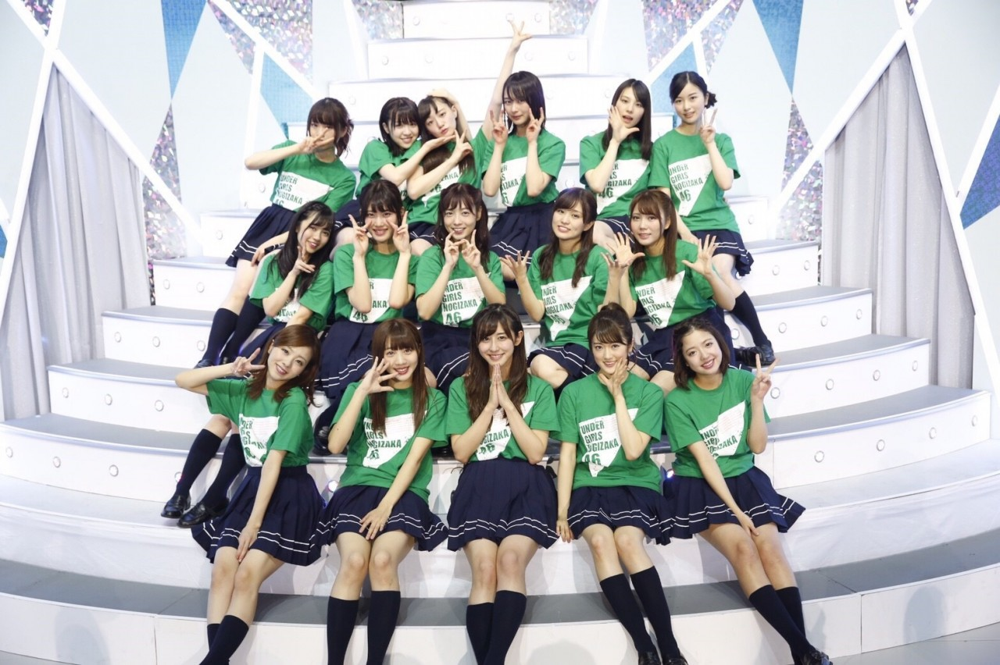
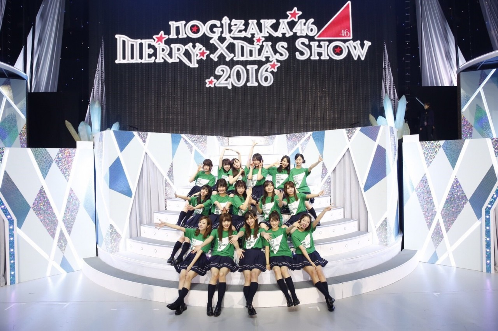
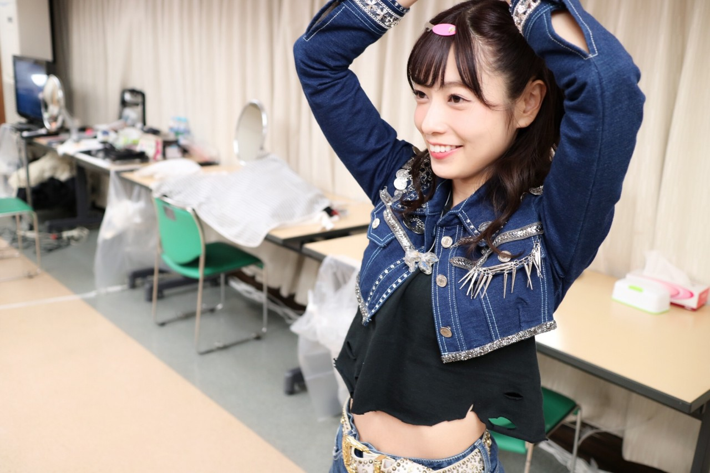
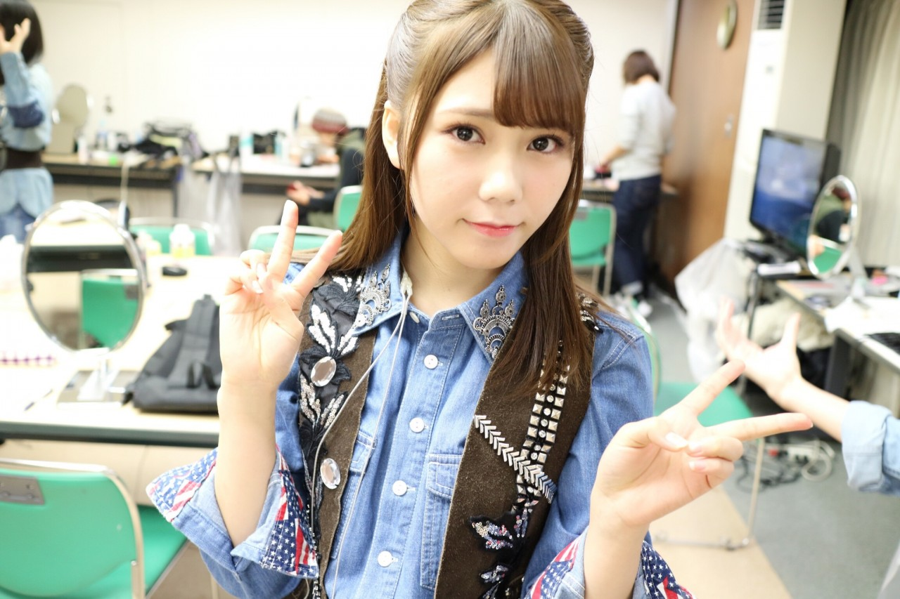

| 2016/12 10 Sat | 斎藤ちはる デニム。 |
ちはるーむへようこそ！
恒例の集合写真をみんなで撮ったよ◎
愛未と2人でセンター挟もうね！って
話してたんだけど人数の関係でずれて！
とスタッフさんに言われてしまったので
図々しくもセンターに( ˟_˟ )笑


私はこの集合写真が大好き！
昔のライブでの集合写真を
たまに見返した時に、
このライブはこんな事があったな〜とか
大変だったけど頑張って良かったな〜とか
色々と思い出します。
また少し時間が経った時に
この集合写真を見返すと
今回の楽しかった思い出が
また蘇るんだろうな(﹡ˆ ˆ﹡)
---------------------------------♡
#chihaOOTD
今日はライブで初披露をした、
「ブランコ」の歌衣装を
紹介しようと思っていますが...
分かりやすく衣装が写っている
写真を撮るのを忘れてしまったので
他のメンバーも登場♡♡
私は長めのデニムのシャツに、
デニムのショートパンツ、
ゴツい黒のベルトに、
黒のTシャツ。
後ろに微かに写っている
チェックのポンチョ風マントも羽織ります！
スタッズがたくさん付いてるのが
本当カッコよくて好き。
そして実は今回のブランコ衣装、
全員バラバラなんです。
とても嬉しい！！

優里は、短めのデニムジャケットに
短い黒のTシャツ、
白のベルトにデニムスカート！
全体的に短めな衣装が
優里っぽくて可愛い(﹡ˆ ˆ﹡)

川後は、薄い色のデニムシャツに、
茶色のベスト！
確かに濃いインディゴデニムよりも
薄いデニムが似合ってるな〜♪
ベストも個性的！
こんな風に全員バラバラなので
ブランコの衣装、注目して見てください！
デニム大好き。
---------------------------------♡
♬ ChihaMusic
「C.h.a.o.s.m.y.t.h.」ONE OK ROCKさん
とにかく歌詞が良くて、
素直に感動してしまう。
卒業シーズンになったら余計に
この曲を聴いて感傷的になってしまいそう。
"悪さやバカもしたね よく怒られたね
ただ楽しくてそんな日々が
ずっと続くと思ってた
けど気付けば大人になってって
それと共に夢もでかくなっていって
それぞれが選んだ道へ"
楽しい思い出を胸に
別れを惜しまずに
それぞれが前へ進んでいこうという気持ち。
なんて素敵なんだろう。
ブログのコメントを見るのが
毎日の日課です\( ˆ ˆ )/
皆さんありがとう。
おやすみ〜
斎藤ちはる